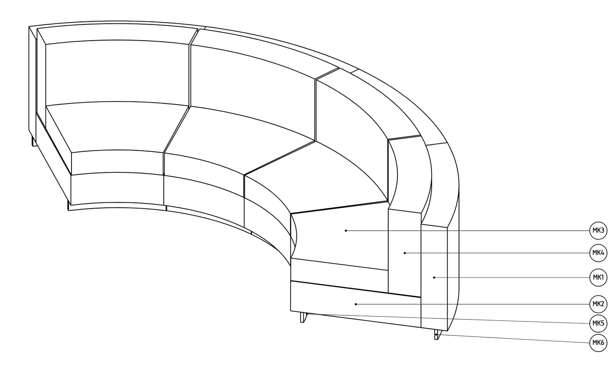
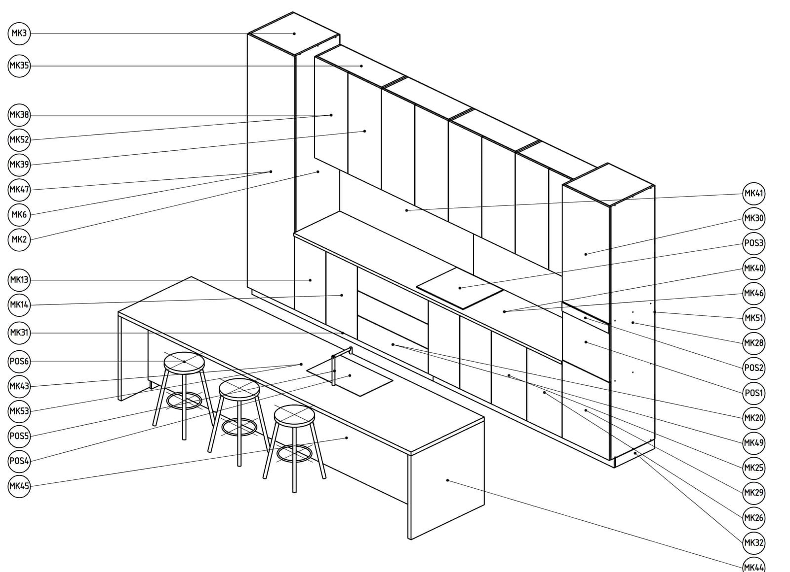
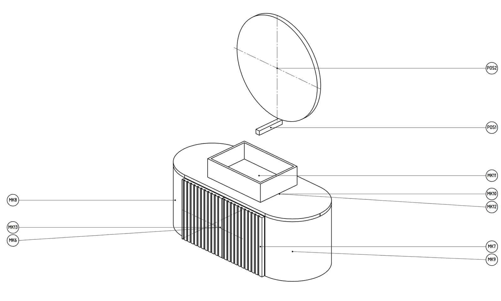
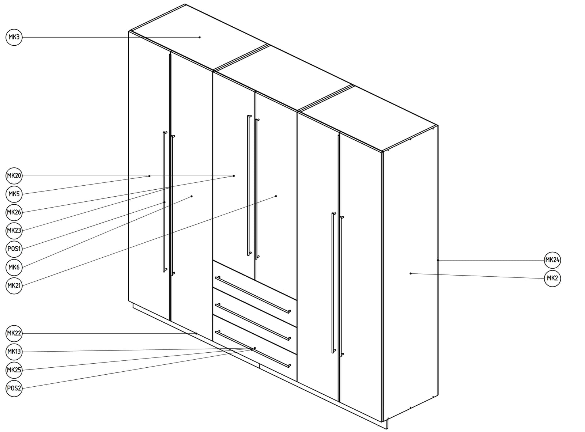
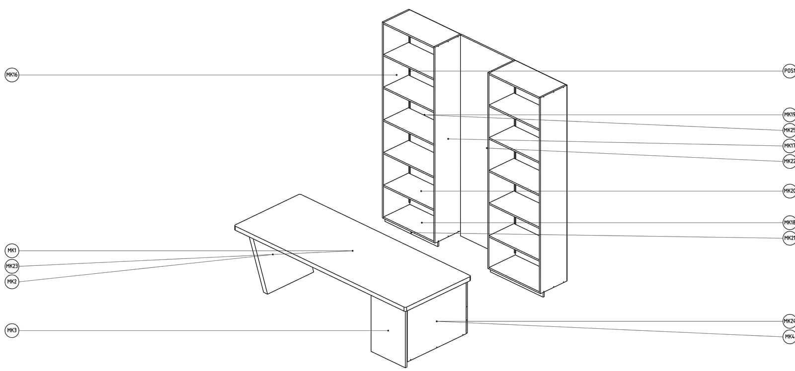
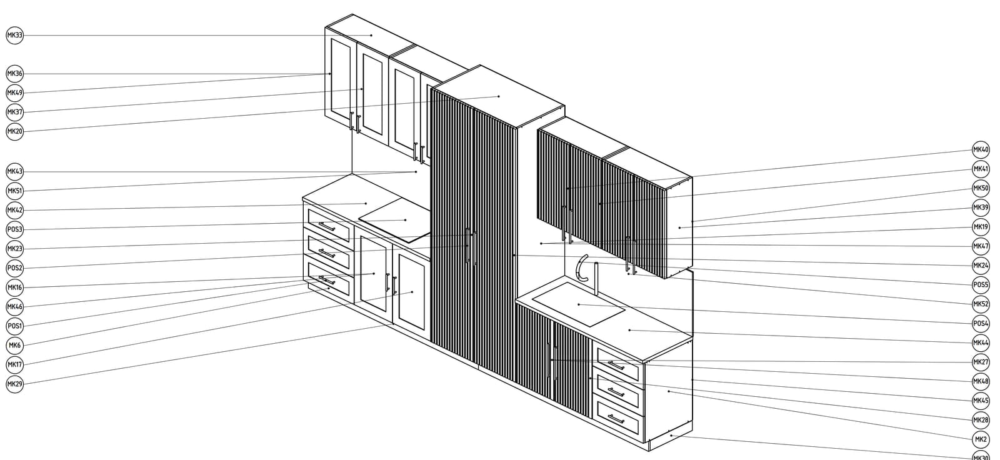

Architecture et fabrication sur mesure
Nous concevons des espaces et les éléments sur mesure qui leur donnent vie. Des concepts architecturaux et de l’aménagement intérieur jusqu’aux meubles, portes, portails et fenêtres sur mesure, Sujo accompagne chaque projet de l’idée et de la conception jusqu’à la fabrication et la pose.

Immeuble à cour R+5La cuisine et la salle à manger du penthouse 3Meubles dessinés sur mesure, fabriqués à Kinshasa
Architecture, de la parcelle à la façade
Maisons, immeubles, écoles et bâtiments d’activité, dessinés en entier : plans, structure, lots techniques et façades.
Logements collectifsImmeuble à cour R+5Emprise 49 × 52,5 m
Tour de logementsTour AzurTour 40 × 40 m, 23 niveaux
Tour de logementsTour HorizonTour 40 × 16 m, 18 niveaux
Équipement scolaireÉcole R+2Emprise 12,5 × 24 m
Maison de villeMaison R+2Emprise 9,9 × 11,6 m
VillaMaison R+1, modèle 2318,6 m² habitables
VillaMaison R+1Emprise 22 × 26 m
Agence bancaireAgence bancaire typePlain-pied, 329 m² utiles
Bâtiment industrielUsine 3, Fabriqué à KinshasaParcelle 57,5 × 26 m, 1 495 m²
Design intérieur, pensé pièce par pièce
Chaque meuble que vous voyez est dessiné sur mesure pour son espace, puis fabriqué à Kinshasa selon nos plans.
Visite 3DVisite 3D de la Maison R+1, modèle 2 : la façade, puis les pièces aménagées.
Pièces sur mesure
Chaque pièce, à côté de son plan de fabrication.












Du concept à l’ouvrage fini
Nous travaillons avec vous pour comprendre vos objectifs, développer la conception et coordonner la fabrication des pièces retenues. Un seul processus, des premières idées et des premiers plans jusqu’aux éléments sur mesure finis.
Conception
Nous comprenons vos objectifs et développons la conception : plans et choix des matériaux.
Fabrication
Nous coordonnons la fabrication des pièces retenues, selon nos plans.
Pose
Les éléments sur mesure finis sont posés dans votre maison, votre bureau ou votre projet commercial.
Les images de cette page sont des rendus 3D de nos conceptions, sauf celles marquées « Photo », qui montrent des pièces fabriquées.
FAQ
Que concevez-vous ?
Maisons, immeubles, écoles et bâtiments d’activité, leurs intérieurs, et les pièces sur mesure : cuisines, dressings, meubles de salle de bain, canapés et salles à manger, meubles TV, mobilier de bureau et d’accueil, mobilier scolaire, agencement de magasins, portes, portails et fenêtres.
Les pièces sont-elles faites sur mesure ?
Oui. Chaque projet part de votre besoin : il est modélisé en 3D, validé avec vous, puis préparé pour la fabrication.
Où sont-elles fabriquées ?
À Kinshasa, selon nos plans, avec un dossier de fabrication complet pour chaque meuble.
Peut-on voir les pièces avant ?
Oui. Les pièces sont aménagées dans la maquette 3D, pour voir les espaces avant de construire.
Combien coûte un meuble ?
Chaque projet est chiffré sur devis écrit. Le devis indique la devise, les délais et sa durée de validité.
De quoi avez-vous besoin pour établir un devis ?
Une description du besoin suffit pour commencer ; des photos, des plans, un échantillon ou un cahier des charges nous aident à répondre plus précisément.